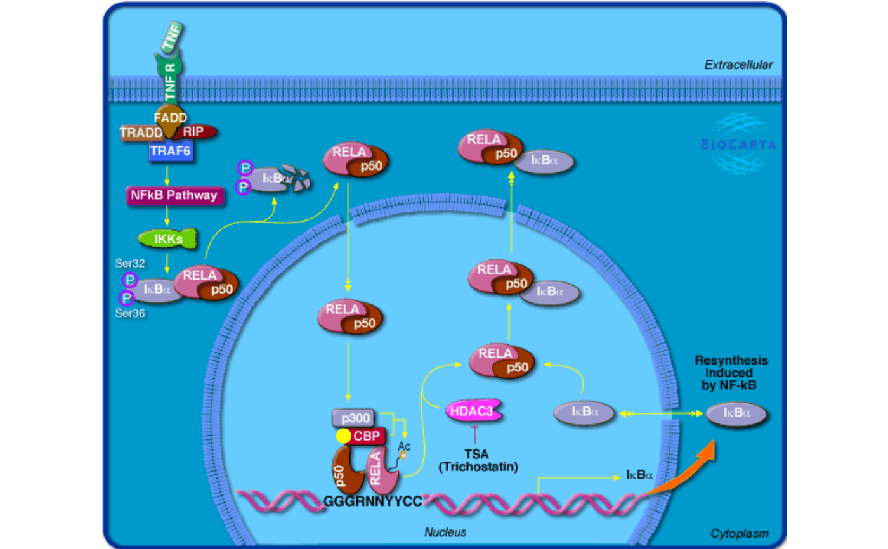
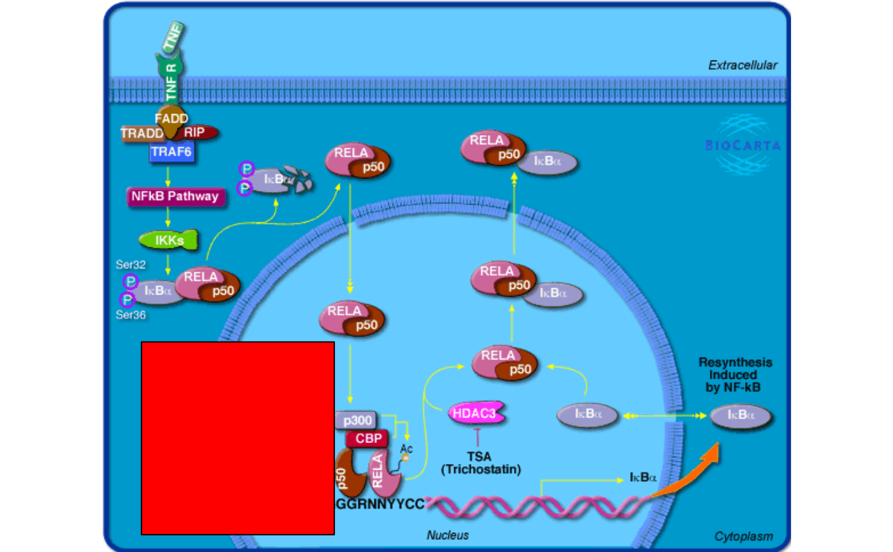
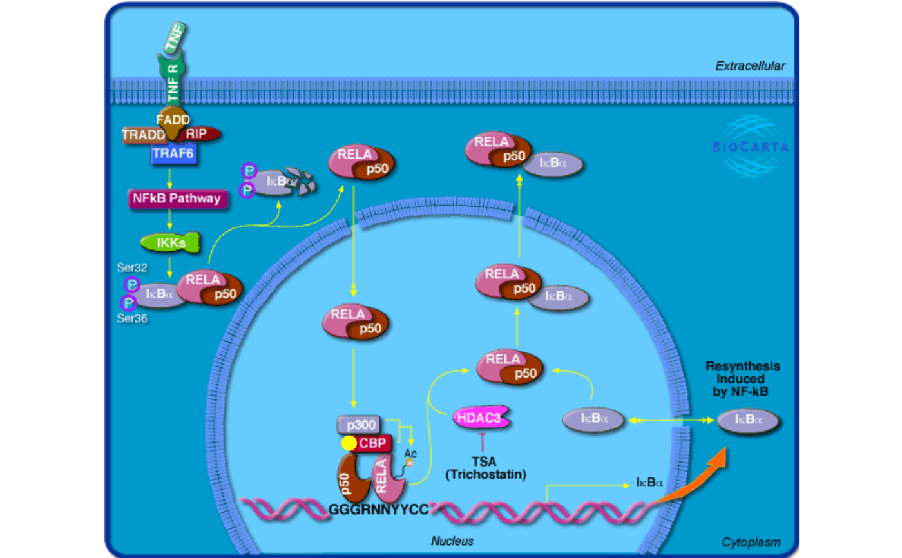
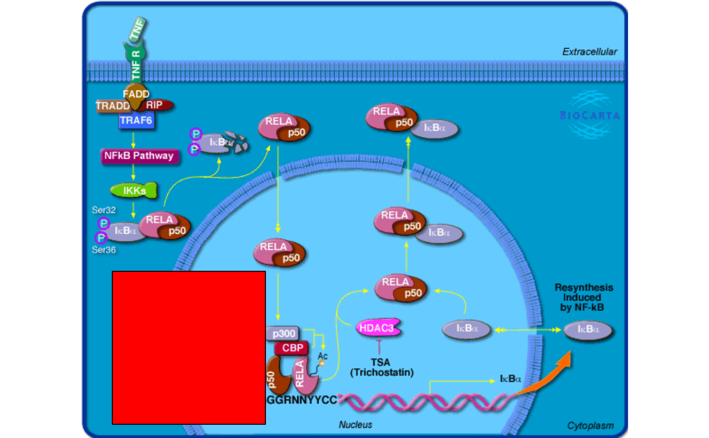

Mark a gene on the pathway image
mark_gene(grob, entrez_id, fun, min_area = 0, capture = FALSE)Arguments
- grob
A
grobreturned bybiocartaGrob().- entrez_id
A single Entrez ID.
- fun
A self-defined function to add graphics to the selected gene.
- min_area
Multiple polygons may be used for one single gene in the image. It can be used to select the largest polygon. The unit for calculating the area is the pixel in the image (or more properly, square pixels).
- capture
It is suggested to let
fun()directly returngrob/gTreeobjects. But you can also directly use functions such asgrid.points()orgrid.lines()infun((). In this case,capturemust be set toTRUEto capture these graphics.
Value
If capture = FALSE, it must return a grob where new graphics are already added.
Details
fun() should be applied to each gene. It is possible an Entrez gene is mapped to multiple nodes
in the image, so more precisely, fun() is applied to every node that contains the input gene.
fun() only accepts two arguments, x and y which are two vectors of xy-coordinates that define
the polygon. The helper function pos_by_polygon() can be used to get positions around the polygon.
There are two ways to use fun(). First, fun() directly returns a grob. It can be a simple grob, such
as by grid::pointsGrob() or complex grob by grid::gTree() and grid::gList(). Second, fun()
can directly include plotting functions such as grid::grid.points(), in this case, capture argument
must be set to TRUE to capture these graphics.
Examples
library(grid)
grid.newpage()
grob = biocartaGrob("h_RELAPathway")
# gene 1387 is a gene in the pathway
grob2 = mark_gene(grob, "1387", function(x, y) {
pos = pos_by_polygon(x, y)
pointsGrob(pos[1], pos[2], default.units = "native", pch = 16,
gp = gpar(col = "yellow"))
})
grid.draw(grob2)
 grid.newpage()
grob3 = mark_gene(grob, "1387", function(x, y) {
pos = pos_by_polygon(x, y)
grid.points(pos[1], pos[2], default.units = "native", pch = 16,
gp = gpar(col = "yellow"))
}, capture = TRUE)
grid.draw(grob3)

grid.newpage()
grob4 = mark_gene(grob, "1387", function(x, y) {
pos = pos_by_polygon(x, y)
pushViewport(viewport(x = pos[1] - 10, y = pos[2],
width = unit(4, "cm"), height = unit(4, "cm"),
default.units = "native", just = "right"))
grid.rect(gp = gpar(fill = "red"))
popViewport()
}, capture = TRUE)
grid.draw(grob4)

grid.newpage()
grob3 = mark_gene(grob, "1387", function(x, y) {
pos = pos_by_polygon(x, y)
grid.points(pos[1], pos[2], default.units = "native", pch = 16,
gp = gpar(col = "yellow"))
}, capture = TRUE)
grid.draw(grob3)

grid.newpage()
grob4 = mark_gene(grob, "1387", function(x, y) {
pos = pos_by_polygon(x, y)
pushViewport(viewport(x = pos[1] - 10, y = pos[2],
width = unit(4, "cm"), height = unit(4, "cm"),
default.units = "native", just = "right"))
grid.rect(gp = gpar(fill = "red"))
popViewport()
}, capture = TRUE)
grid.draw(grob4)
